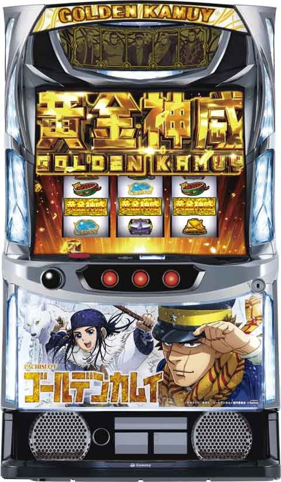

Lゴールデンカムイ

 狙い目
狙い目
【スルー別リセット狙い】
・ボーナス間
0スルー 1200ピュウから
1スルー 850ピュウから
2スルー 550ピュウから
3スルー 850ピュウから
4スルー 550ピュウから
5スルー
積極派 0ピュウからATまで
慎重派 300ピュウからATまで
6スルー ATまで
【スルー別ボーナス間天井狙い】
0スルー 1500ピュウから
1スルー 1200ピュウから
2スルー 850ピュウから
3スルー 1050ピュウから
4スルー 850ピュウから
5スルー 500ピュウからATまで
6スルー以降 ATまで
【ゾーン狙い】
200ピュウにゾーンあり
有利切れが絡むため(特にAT後)前回ATの獲得枚数や有利差枚でボーダー調整。
0スルー(朝イチ) 100ピュウ
0スルー(AT後)
積極派 0ピュウ
慎重派 100ピュウ
カムイボーナス後 100ピュウから
決戦ボーナス後 190ピュウから
※砂金ポイントの示唆や1枚絵の規定ピュウ示唆見るために浅めから打つケースありそう。
【砂金ポイント狙い】
MAX100pt貯まれば次回ボーナス当選時にATへ書き換え
設定変更時
33.2% 50pt以上
33.2% 80pt以上
カムイボーナス 10-50pt獲得
蓄積大 AT当選まで
蓄積中
積極派 AT当選まで
慎重派 天国(200ピュウ)確認。1枚絵緑以上でボーナス当選まで。蓄積中確認後ボーナス当選した場合は砂金解放まで打つのが望ましい。
【有利区間切れ狙い】
①獲得枚数表示2000枚超え狙い
※エンディング狙いで200ピュウ狙い
※狙う対象で一撃2000枚以上出ている場合は既に上位AT入ってると思われるので獲得枚数狙いは出来なそう。
※獲得枚数引継条件は下記画像
{kind=link}
一撃500枚以上後 0ピュウから
積極派はAT後 枚数不問で0ピュウから
②有利区間差枚からの有利切れ
※残り500枚以下(1900枚)でエンディング発生。
※200ピュウのゾーンまで
※200ピュウゾーン抜け後は1枚絵で押し引き
差枚+1000枚以上
0スルー 0ピュウから250ピュウまで
1スルー目以降
BB後 示唆なしやめ
RB後 当たるまで
差枚+600枚から1000枚 50ピュウから
【終了画面示唆狙い】
緑以上 ボーナス当選まで
黄 400ピュウから
青 450ピュウから600ピュウのゾーンまで
スルー回数や砂金ポイント示唆も兼ねてボーダー調整出来そう
200ピュウのゾーン終わりでも出る
1枚絵の示唆について
{kind=link}

やめ時
基本は示唆見てやめ
AT後の獲得枚数や有利差枚で押し引き
ゴールデンロード移行時は消化
atの100G以内の引き戻しが期待できる際のやめ方
at後、カムイボーナス(RB)後、決戦ボーナスの順に200ビュウで引き戻しやすい
引き戻しに期待できる時は必ず高確確認
高確で短縮されて100G以内に引き戻しが可能なビュウなら続行そうでなければやめ
一枚絵とビュウの組み合わせで打たないといけないパターン(残り200ビュウ以内)は当たるまで
その他
・上位AT突入のサイン。
50-60 Gで直撃の信号が上がる。
有利切れ以降の差枚は下記のデータ14:37の56 Gから獲得枚数を計算で良さそう。

・カムイボーナスと決戦ボーナスの見分け方の目安
カムイボーナス 65枚以下
決戦ボーナス 100枚以上
65-100枚はどちらか不明
・規定ピュウの当選分布
{kind=link}
・獲得エフェクト、保有ポイント


参考元
基本情報
- メーカー: サミー
- 機械割: 97.9% 〜 113.3%
- 導入開始日: 2024年04月08日（月）
- ゲーム性概要: TVアニメ「ゴールデンカムイ」がスマスロで登場する。 通常時は規定ピュウ☆到達・レア役（絆役）・「温泉チャンス」などからボーナスを目指すゲーム性で、決戦ボーナス→決戦チャンスを突破してATへ突入するのが王道ルートだ。 AT「黄金神威」は純増約2.7枚/G、100G＋αのゲーム数上乗せ型。レア役や特化ゾーンでゲーム数上乗せが抽選され、獲得枚数が2000枚を超えるとAT終了時に「ゴールデンロード」へ突入。「ゴールデンロード」は突入した時点で上位AT「真・黄金神威（純増約4.5枚/G）」濃厚、ゴールデンロード中にフリーズが発生すれば特化ゾーン「ゴールドラッシュ」を経由して上位ATが始まる。


打ち方
打ち方・小役
打ち方（小役狙い）
「通常時はフリー打ちでOK」

押し順ナビなし時はフリー打ちでOKだ。
「小役の停止例」

参戦役はいずれかの仲間参戦濃厚となる特殊な役。参戦中に引けば2人目・3人目が参戦するので成立タイミングもかなり重要だ。
変則押しはNG

通常時、押し順ナビなし時は左リール第1停止での消化を推奨する。
リーチ目／出目法則
リプレイorスイカの1確目

左リール中段にボーナス or ブランクが止まればリプレイ or スイカの1確目。リプレイで上乗せ濃厚となるAT中のアシㇼパ参戦中・覚醒中・激突！ ラッコ鍋相撲中は、上記出目が止まると上乗せ確定のエフェクトが発生する。
解析情報通常時
小役関連
小役の抽選内容
仲間非参戦時は、小役ごとにおもに抽選されるものが決まっている。参戦中の対応役は絆役となり、通常時であればボーナスの、AT中なら特化ゾーンやボーナスの期待度がアップする。
仲間非参戦時・小役のおもな抽選内容
| 役 | 内容 |
|---|---|
| チェリー | 高確移行抽選 |
| チャンス目 | 狩猟チャレンジ抽選 |
| スイカ | ピュウ☆加算抽選 |
※仲間参戦時はリプレイで上記抽選がおこなわれる （例：杉元参戦時はリプレイで高確移行抽選、チェリーが絆役）
狩猟チャレンジ当選期待度序列
| 役 | 序列 |
|---|---|
| スイカ | 低 |
| チェリー | ↓ |
| チャンス目 | ↓ |
| チェリー＋チャンス目＋スイカ | 高 |
温泉チャンス当選期待度序列
| 役 | 序列 |
|---|---|
| チャンス目 | 低 |
| チェリー＋チャンス目＋スイカ | 高 |
ボーナス当選期待度序列
| 役 | 序列 |
|---|---|
| チェリー | 低 |
| 絆役 | ↓ |
| 強絆役 | 高 |
| 中段チェリー | AT濃厚 |
杉元参戦時のスイカ成立はチェリー＋スイカのように、参戦している仲間非対応のレア役成立時は、成立した役＋参戦しているキャラの対応役の2つの抽選を受けられる。
レア役早見表はコチラ
仲間参戦時のレア役早見表
仲間参戦中はリプレイがレア役相当、対応レア役は絆役として抽選。非対応のレア役を引いた場合は、 引いたレア役の抽選に加え、参戦している仲間に対応したレア役の抽選も受けられる 。慣れるまでは少しむずかしいが、仲間参戦中に非対応レア役を引いてもムダになるわけではないと覚えておこう。
仲間参戦時・レア役早見表
| 成立役 | 杉元参戦 | アシㇼパ参戦 | 白石参戦 |
|---|---|---|---|
| リプレイ | チェリー | チャンス目 | スイカ |
| チェリー | 絆役 | チェリー＋ チャンス目 | チェリー＋ スイカ |
| チャンス目 | チェリー＋ チャンス目 | 絆役 | チャンス目＋ スイカ |
| スイカ | チェリー＋ スイカ | チャンス目＋ スイカ | 絆役 |
| 成立役 | 杉元＆アシㇼパ 参戦 | 杉元＆白石 参戦 | アシㇼパ＆白石 参戦 |
| リプレイ | チェリー＋ チャンス目 | チェリー＋ スイカ | チャンス目＋ スイカ |
| チェリー | 強絆役 | 強絆役 | チェリー＋ チャンス目＋スイカ |
| チャンス目 | 強絆役 | チェリー＋ チャンス目＋スイカ | 強絆役 |
| スイカ | チェリー＋ チャンス目＋スイカ | 強絆役 | 強絆役 |
| 成立役 | 杉元＆アシㇼパ＆白石参戦 | ||
| リプレイ | チェリー＋チャンス目＋スイカ | ||
| チェリー | 強絆役 | ||
| チャンス目 | 強絆役 | ||
| スイカ | 強絆役 |
※参戦役・中段チェリーは参戦状態不問で共通の抽選
ボーナス当選率
| 役 | 通常 | 高確準備 | 高確 |
|---|---|---|---|
| チェリー | 0.4% | 0.4% | 0.4% |
| チェリー＋スイカ | 0.4% | 0.4% | 0.4% |
| チェリー＋チャンス目 | 0.4% | 0.4% | 0.4% |
| 絆役 | 20.3% | 20.3% | 50.0% |
| 強絆役 | 50.0% | 50.0% | 100% |
| 中段チェリー | 100% | 100% | 100% |
※レア役＋レア役は仲間参戦時のもの
参戦人数ごとの実質レア役合算確率
| 役 | 参戦ナシ | 一人参戦 | 二人参戦 | 三人参戦 |
|---|---|---|---|---|
| レア役合算 | 1/44.8 | 1/10.0 | 1/10.0 | 1/10.0 |
| 強レア役合算 | 1/910.2 | 1/44.8 | 1/10.0 | 1/10.0 |
※強レア役…参戦役、複合役、（強）絆役、中段チェリー
［仲間非参戦］小役確率
| 役 | 確率 |
|---|---|
| ベルリプレイ | 1/22.3 |
| リプレイ | 1/12.9 |
| チェリー | 1/128.0 |
| チャンス目 | 1/149.6 |
| スイカ | 1/149.6 |
| 参戦役 | 1/963.8 |
| 中段チェリー | 1/16384.0 |
［仲間一人参戦時］レア役確率 （変換を加味した実質確率）
| 役 | 杉元 | アシㇼパ | 白石 |
|---|---|---|---|
| ベルリプレイ | 1/22.3 | ||
| チェリー | 1/12.9 | ー | ー |
| チャンス目 | ー | 1/12.9 | ー |
| スイカ | ー | ー | 1/12.9 |
| 参戦役 | 1/963.8 | ||
| 絆役 | 1/128.0 | 1/149.6 | 1/149.6 |
| チェリー＋スイカ | 1/149.6 | ー | 1/128.0 |
| チェリー＋チャンス目 | 1/149.6 | 1/128.0 | ー |
| チャンス目＋スイカ | ー | 1/149.6 | 1/149.6 |
| 強絆役 | ー | ー | ー |
| チェリー＋チャンス目＋スイカ | ー | ー | ー |
| 中段チェリー | 1/16384.0 |
［仲間二人参戦時］レア役確率 （変換を加味した実質確率）
| 役 | 杉元＋ アシㇼパ | 杉元＋白石 | アシㇼパ＋ 白石 |
|---|---|---|---|
| ベルリプレイ | 1/22.3 | ||
| チェリー | ー | ー | ー |
| チャンス目 | ー | ー | ー |
| スイカ | ー | ー | ー |
| 参戦役 | 1/963.8 | ||
| 絆役 | ー | ー | ー |
| チェリー＋スイカ | ー | 1/12.9 | ー |
| チェリー＋チャンス目 | 1/12.9 | ー | ー |
| チャンス目＋スイカ | ー | ー | 1/12.9 |
| 強絆役 | 1/69.0 | 1/69.0 | 1/74.8 |
| チェリー＋チャンス目＋スイカ | 1/149.6 | 1/149.6 | 1/128.0 |
| 中段チェリー | 1/16384.0 |
［仲間三人参戦時］レア役確率 （変換を加味した実質確率）
| 役 | 確率 |
|---|---|
| ベルリプレイ | 1/22.3 |
| チェリー | ー |
| チャンス目 | ー |
| スイカ | ー |
| 参戦役 | 1/963.8 |
| 絆役 | ー |
| チェリー＋スイカ | ー |
| チェリー＋チャンス目 | ー |
| チャンス目＋スイカ | ー |
| 強絆役 | 1/47.2 |
| チェリー＋チャンス目＋スイカ | 1/12.9 |
| 中段チェリー | 1/16384.0 |
狩猟チャレンジ当選率
1契機で最大5個まで、狩猟チャレンジをストックする可能性あり。ストックはボーナスに当選しても引き継がれる（ゴールデンロード突入＝有利区間が切れた場合を除く）。
設定差ナシ ［通常・高確準備滞在時］狩猟チャレンジ当選率
| ストック | チェリー／チェリー＋スイカ |
|---|---|
| ナシ | 94.5% |
| 1個 | 4.7% |
| 2個 | 0.4% |
| 3個 | 0.4% |
| 5個 | ー |
［高確滞在時］狩猟チャレンジ当選率
| ストック | チェリー | チャンス目 | スイカ |
|---|---|---|---|
| ナシ | 50.0% | ー | 82.0% |
| 1個 | 43.8% | 82.0% | 14.1% |
| 2個 | 4.7% | 9.4% | 3.1% |
| 3個 | 1.2% | 4.7% | 0.4% |
| 5個 | 0.4% | 3.9% | 0.4% |
| ストック | チェリー＋ スイカ | チェリー＋ チャンス目 | チャンス目＋ スイカ |
| ナシ | ー | ー | ー |
| 1個 | 79.7% | ー | ー |
| 2個 | 18.8% | 82.8% | 82.8% |
| 3個 | 1.2% | 12.5% | 12.5% |
| 5個 | 0.4% | 4.7% | 4.7% |
［全状態共通］狩猟チャレンジ当選率
| ストック | チェリー＋スイカ＋チャンス目 |
|---|---|
| ナシ | ー |
| 1個 | ー |
| 2個 | ー |
| 3個 | ー |
| 5個 | 100% |
［高確滞在時］温泉チャンス当選率
| 役 | 当選率 |
|---|---|
| チャンス目 | 7.8% |
| チェリー＋チャンス目 | 7.8% |
| チャンス目＋スイカ | 7.8% |
| チェリー＋チャンス目＋スイカ | 100% |
リールロック
レバーON時にリールロックが発生すれば、レア役以上濃厚。仲間参戦による恩恵を受けた小役に応じて抽選がおこなわれるため、仲間参戦中の方が発生確率は高い。
リールロック確率
| リールロック | 通常時 | AT中 |
|---|---|---|
| 1段階 | 1/465.4 | 1/419.5 |
| 2段階 | 1/1635.2 | 1/1378.3 |
| トータル | 1/362.3 | 1/321.6 |
通常時に比べAT中の方が仲間が参戦しやすいため、リールロックも発生しやすい。
リールロックの対応役
| リールロック | 対応役 |
|---|---|
| 1段階 | チェリー、スイカ以外のレア役 |
| 2段階 | チェリー＋チャンス目、 スイカ＋チャンス目、チェリー＋スイカ＋チャンス目 絆役、強絆役、参戦役、中段チェリー |
非参戦中・リールロック法則
| No. | 法則 |
|---|---|
| 1 | チャンス目or参戦役or中段チェリー濃厚 |
| 2 | リールロック2段階は参戦役or中段チェリー （約10%で中段チェリーが成立） |
内部状態関連
内部状態概要
通常時の内部状態は通常、高確準備、高確の3種類あり、滞在状態に応じて狩猟チャレンジ・温泉チャンス・ボーナス直撃の当選率が変化。クチャ（仮小屋）ステージは高確の大チャンスだ。
高確中のレア役の抽選内容・期待度
| 役 | 内容 |
|---|---|
| チェリー | 約50%で狩猟チャレンジに当選 |
| チャンス目 | 狩猟チャレンジ当選濃厚 |
| スイカ | ピュウ☆加算＋狩猟チャレンジ抽選 |
内部状態移行率
通常時は通常＜高確準備＜高確と、3つの内部状態が存在。滞在状態に応じて、レア役（おもに絆役）成立時のボーナス当選率が変化する。 設定変更時やボーナス＆AT終了時は必ず高確からスタートして、10枚ベル（こぼし含む）時に転落を抽選。昇格はチェリーで抽選される。
初期内部状態振り分け
| 状態 | 振り分け |
|---|---|
| 通常 | ー |
| 高確準備 | ー |
| 高確 | 100% |
［通常滞在時］内部状態移行率
| 役 | 通常 | 高確準備 | 高確 |
|---|---|---|---|
| その他 | 100% | ー | ー |
| チェリー | 25.0% | 68.8% | 6.3% |
［高確準備滞在時］内部状態移行率
| 役 | 通常 | 高確準備 | 高確 |
|---|---|---|---|
| その他 | ー | 100% | ー |
| チェリー | ー | ー | 100% |
| 10枚ベル | 3.9% | 96.1% | ー |
※10枚ベルはこぼしを含む（3枚ベルこぼしとの判別はできない）
［高確滞在時］内部状態移行率
| 役 | 通常 | 高確準備 | 高確 |
|---|---|---|---|
| その他 | ー | ー | 100% |
| 10枚ベル | ー | 4.7% | 95.3% |
※10枚ベルはこぼしを含む（3枚ベルこぼしとの判別はできない）
規定ポイント抽選（ピュウ☆カウンター）
ピュウ☆カウンター概要

通常時は規定のピュウ☆到達でボーナス当選のチャンス。ピュウ☆は1Gで最低1ずつ加算され、スイカ成立時は大量加算に期待でき、ピュウ☆獲得の特化ゾーン、狩猟チャレンジも存在する。
200・400・600・800・1000ピュウ☆到達時はボーナスの期待度が高く、当否はおもに前兆ステージを経由して告知される。
規定ピュウ☆到達時のボーナス期待度
| 規定ピュウ☆ | 設定変更時 | 設定変更時以外 |
|---|---|---|
| 100ピュウ☆ | △ | △ |
| 200ピュウ☆ | ☆ | ☆ |
| 300ピュウ☆ | △ | △ |
| 400ピュウ☆ | 〇 | 〇 |
| 500ピュウ☆ | △ | △ |
| 600ピュウ☆ | ◎ | ◎ |
| 700ピュウ☆ | △ | △ |
| 800ピュウ☆ | 〇 | 〇 |
| 900ピュウ☆ | △ | △ |
| 1000ピュウ☆ | ☆ | ☆ |
| 1100ピュウ☆ | △ | △ |
| 1200ピュウ☆ | △ | △ |
| 1300ピュウ☆ | △ | △ |
| 1400ピュウ☆ | 〇 | 〇 |
| 1500ピュウ☆ | △ | △ |
| 1600ピュウ☆ | 天井 | ◎ |
| 1700ピュウ☆ | ◎ | |
| 1800ピュウ☆ | 天井 |
※期待度…△＜◯＜◎＜☆ ※設定変更時は抽選によって内部的にピュウ☆を加算しているため、前兆発生タイミングがズレる可能性あり
成立役別・加算ピュウ☆振り分け
| ピュウ☆ | その他 | スイカ | チェリー＋ スイカ | スイカ＋ チャンス目 |
|---|---|---|---|---|
| 1ピュウ☆ | 100% | ー | ー | ー |
| 5ピュウ☆ | ー | ー | ー | ー |
| 10ピュウ☆ | ー | 50.0% | 50.0% | 50.0% |
| 20ピュウ☆ | ー | 32.0% | 32.8% | 32.8% |
| 30ピュウ☆ | ー | 9.4% | 9.4% | 9.4% |
| 50ピュウ☆ | ー | 6.3% | 6.3% | 6.3% |
| 100ピュウ☆ | ー | 1.6% | 0.8% | 0.8% |
| 200ピュウ☆ | ー | 0.4% | 0.4% | 0.4% |
| 300ピュウ☆ | ー | 0.4% | 0.4% | 0.4% |
※レア役＋レア役は仲間参戦時のもの
AT終了後・規定ピュウ☆振り分け
| ピュウ☆ | 振り分け |
|---|---|
| 100ピュウ☆ | 2.9% |
| 200ピュウ☆ | 43.2% |
| 300ピュウ☆ | 1.3% |
| 400ピュウ☆ | 5.3% |
| 500ピュウ☆ | 1.3% |
| 600ピュウ☆ | 13.2% |
| 700ピュウ☆ | 0.8% |
| 800ピュウ☆ | 3.1% |
| 900ピュウ☆ | 0.8% |
| 1000ピュウ☆ | 20.3% |
| 1100ピュウ☆ | 0.1% |
| 1200ピュウ☆ | 0.2% |
| 1300ピュウ☆ | 0.1% |
| 1400ピュウ☆ | 0.6% |
| 1500ピュウ☆ | 0.1% |
| 1600ピュウ☆ | 3.2% |
| 1700ピュウ☆ | 1.8% |
| 1800ピュウ☆ | 1.8% |
仲間参戦／絆役
仲間参戦概要
リプレイやレア役成立時は、リール右下のメーターに参戦ポイントが加算されていき、10pt到達時に仲間参戦を抽選。参戦した仲間には対応役（絆役）があり、成立時はボーナスのチャンス。
また、参戦中はリプレイがレア役相当の抽選となるため、仲間の参戦がゲーム性の軸となっている。
参戦ポイント性能
| 項目 | 内容 |
|---|---|
| 獲得契機 | リプレイ・レア役の一部、参戦役は参戦濃厚 |
| 10pt獲得時の恩恵 | 参戦チャンスへ（約50%で仲間参戦） |
| 参戦ゲーム数 | 15G |
| その他 | 基本は1人参戦だが、2人以上参戦することもある |
仲間ごとの対応役
| 仲間 | 対応役 |
|---|---|
| 杉元 | チェリー |
| アシㇼパ | チャンス目 |
| 白石 | スイカ |
※各キャラ参戦中に上記小役を引くと絆役となって期待度アップ
［参戦メーター］

［参戦チャンス］

［キャラ参戦］

参戦したキャラはリール下部に表示。参戦メーター部分に残り参戦ゲーム数が表示される。
［絆役］

白石参戦時のスイカなど、参戦している仲間に対応したレア役が絆役（通常時はボーナス抽選、AT中は各種抽選が優遇）。杉元＆白石参戦時のチェリーのように、複数参戦時の対応レア役は強絆役となってさらに期待度がアップする。絆役成立時はリール部分に絆のアイコンが出現するのでわかりやすいぞ。
仲間参戦中の抽選内容
仲間参戦中のリプレイはレア役扱いとなり、2人参戦時のリプレイでは2つの効果が発動。 例えば、杉元参戦中にチャンス目が成立した場合、チェリーとチャンス目の2つの抽選がおこなわれるため、チェリーで高確移行かつ、高確中のチャンス目なので狩猟チャレンジが濃厚となる。すでに高確中だった場合、チェリーで狩猟チャレンジに当選・さらにチャンス目でも狩猟チャレンジに当選といったケースもある（温泉チャンス当選の可能性もあり）。
レア役ごとのおもな抽選内容
| 役 | 内容 |
|---|---|
| チェリー | 高確移行抽選 |
| チャンス目 | 狩猟チャレンジ抽選・温泉チャンス抽選 |
| スイカ | ピュウ☆加算抽選 |
| 絆役 | おもにボーナス抽選 |
杉元参戦時の抽選内容
| 役 | 内容 |
|---|---|
| リプレイ | チェリーの抽選 |
| チェリー | 絆役として抽選 |
| スイカ | チェリー＋スイカの抽選 |
| チャンス目 | チェリー＋チャンス目の抽選 |
アシㇼパ参戦時の抽選内容
| 役 | 内容 |
|---|---|
| リプレイ | チャンス目の抽選 |
| チェリー | チャンス目＋チェリーの抽選 |
| スイカ | チャンス目＋スイカの抽選 |
| チャンス目 | 絆役として抽選 |
白石参戦時の抽選内容
| 役 | 内容 |
|---|---|
| リプレイ | スイカの抽選 |
| チェリー | スイカ＋チェリーの抽選 |
| スイカ | 絆役として抽選 |
| チャンス目 | スイカ＋チャンス目の抽選 |
参戦ポイント獲得率
有利区間移行時・ボーナス＆AT終了時に初期参戦ポイントを抽選。以降は（ベル）リプレイやレア役成立時に加算抽選がおこなわれ、10pt貯まると参戦チャンスが発生する。
初期参戦ポイント振り分け
| ポイント | 振り分け |
|---|---|
| ナシ | 50.0% |
| 1pt | 25.0% |
| 2pt | 12.5% |
| 3pt | 12.5% |
成立役別・参戦ポイント振り分け
| ポイント | ベル リプレイ | リプレイ | チェリー | チャンス目 | スイカ |
|---|---|---|---|---|---|
| ナシ | 25.0% | ー | 75.0% | 75.0% | 75.0% |
| ＋1pt | 50.0% | 41.4% | ー | ー | ー |
| ＋2pt | 18.8% | 25.0% | ー | ー | ー |
| ＋3pt | 6.3% | 25.0% | ー | ー | ー |
| ＋4pt | ー | 0.8% | ー | ー | ー |
| ＋5pt | ー | 6.3% | 23.4% | 23.4% | 23.4% |
| ＋10pt | ー | 1.6% | 1.6% | 1.6% | 1.6% |
参戦人数振り分け
| 人数 | 参戦役以外 | 参戦役 |
|---|---|---|
| 1人 | 95.3% | 76.6% |
| 2人 | 4.7% | 23.4% |
仲間参戦時の振り分け
| 仲間 | 参戦役以外 | 参戦役 |
|---|---|---|
| 杉元 | 45.3% | ー |
| アシㇼパ | 25.0% | 38.3% |
| 白石 | 25.0% | 38.3% |
| 杉元＋アシㇼパ | 1.6% | 7.8% |
| 杉元＋白石 | 1.6% | 7.8% |
| アシㇼパ＋白石 | 1.6% | 7.8% |
狩猟チャレンジ
狩猟チャレンジ概要


5G＋α継続するピュウ☆加算の特化ゾーンで、毎ゲームの成立役に応じてピュウ☆の加算を抽選。液晶内の狩猟レベルが1Gごとに加算される最低ピュウ☆となっていて、消化中は狩猟レベルのアップも抽選する（最大100レベル）。
狩猟チャレンジ性能
| 項目 | 内容 |
|---|---|
| 突入契機 | チャンス目時の抽選 |
| 突入確率 | 約1/65 |
| 継続ゲーム数 | 5G＋α |
| 消化中の抽選 | 成立役に応じてピュウ☆を加算 |
| 消化中の抽選 | 狩猟レベルがアップするほど 1Gあたりの加算ピュウ☆が増加する |
| その他 | 狩猟チャレンジ自体がループする可能性あり |
狩猟チャレンジ確率
レア役成立時に狩猟チャレンジの保証ゲーム数加算も抽選され、保証ゲーム数がなくなった後のハズレ・ベルの一部で終了する。
消化中の抽選
狩猟チャレンジ突入時に狩猟レベルが決まり、以降は成立役に応じてピュウ☆の加算と狩猟レベルアップを抽選。レア役は狩猟チャレンジの保証ゲーム数の追加抽選もおこなわれ、保証ゲーム数がある状態なら＋2G、ない状態なら＋1Gを追加する。保証ゲーム数が0になった後は、10枚ベルの1/2で終了する。
初期狩猟レベル振り分け
| レベル | 振り分け |
|---|---|
| 5 | 87.5% |
| 10 | 9.4% |
| 15 | 2.3% |
| 20 | 0.8% |
狩猟レベルアップ率
| ＋されるレベル | その他 | （ベル）リプレイ | チェリー |
|---|---|---|---|
| 非当選 | 93.8% | ー | ー |
| 5 | 6.3% | 87.5% | ー |
| 10 | ー | 12.5% | 87.5% |
| 15 | ー | ー | 9.4% |
| 20 | ー | ー | 3.1% |
| ＋されるレベル | チャンス目 | スイカ | 参戦役 |
| 非当選 | ー | ー | ー |
| 5 | ー | ー | ー |
| 10 | ー | 87.5% | ー |
| 15 | 87.5% | 9.4% | ー |
| 20 | 12.5% | 3.1% | 100% |
※最大100までレベルアップ
レア役成立時に加算される保証ゲーム数
| 状況 | ゲーム数 |
|---|---|
| 保証ゲーム数あり | ＋2G |
| 保証ゲーム数なし | ＋1G |
保証ゲーム数が0になった後の転落率
| 役 | 転落率 |
|---|---|
| 10枚ベル（こぼし含む） | 50.0% |
※3枚ベルこぼしとの判別はできない
温泉チャンス
温泉チャンス概要

レア役を契機に突入するボーナスの高確率ゾーン。おもにリプレイとレア役でボーナスを抽選するのだが、温泉チャンス中は杉元と白石の2人が必ず参戦するため、レア役を引けばアツい。
温泉チャンス性能
| 項目 | 内容 |
|---|---|
| 突入契機 | レア役時の抽選 |
| 継続ゲーム数 | 20G＋α |
| ボーナス当選期待度 | 約60% |
| 消化中の抽選 | リプレイ・レア役でボーナス直撃抽選 |
ボーナス当選率
| 役 | 当選率 |
|---|---|
| リプレイ | 33.6% |
| チェリー | 75.0% |
| チャンス目 | 75.0% |
| スイカ | 75.0% |
| 参戦役 | 100% |
| 中段チェリー | 100% |
※仲間参戦の恩恵を受けた役ではなく、成立した小役の抽選値
ゲーム数が0になった後の転落率
※3枚ベルこぼしとの判別はできない
砂金ポイント
砂金ポイント概要

ボーナスやAT終了時などに獲得するポイントで、MAXに到達すると次の初当りがATになる。
砂金ポイント獲得契機
| No. | 契機 |
|---|---|
| 1 | 設定変更時 |
| 2 | 通常時のボーナス前兆終了時 |
| 3 | ボーナス終了時 |
| 4 | AT終了時 |
※設定変更時やカムイボーナス後はポイント量が優遇
設定変更時・初期砂金ポイント振り分け
| ポイント | 振り分け |
|---|---|
| 20pt | 33.6% |
| 50pt | 32.8% |
| 80pt | 28.1% |
| 90pt | 4.7% |
| 100pt | 0.8% |
※100pt獲得後のボーナス当選でAT昇格
契機ごとの砂金ポイント獲得量
| 契機 | 獲得量 |
|---|---|
| カムイボーナス終了時 | 10～50pt |
| 決戦ボーナス終了時 | 1～10pt |
| 予兆ステージ失敗時 | 1～10pt |
前兆
決戦ボーナス昇格率
ボーナス本前兆中のレア役では、決戦ボーナスへの昇格を抽選（確定画面でボーナスが揃う際の役を参照してボーナス種別を決定するため、厳密には前兆中に決戦ボーナスを確定させる抽選）。絆役を引けば1/2で決戦ボーナス確定なので、仲間参戦中がアツい。 ちなみに、狩猟チャレンジや温泉チャンス抽選も同時におこなわれているので、前兆中にレア役を引いた場合はボーナスがATに繋がらなかったとしてもチャンスが継続する。
本前兆中・決戦ボーナス昇格率
| 役 | 昇格率 |
|---|---|
| チェリー | 3.1% |
| チャンス目 | 6.3% |
| スイカ | 3.1% |
| チェリー＋チャンス目 | 12.5% |
| チェリー＋スイカ | 12.5% |
| チャンス目＋スイカ | 12.5% |
| 絆役 | 50.0% |
| 強絆役 | 75.0% |
| チェリー＋スイカ＋チャンス目 | 75.0% |
| 参戦役 | 50.0% |
演出動画
ロングフリーズ
ゴールドラッシュ＋AT濃厚。通常時・初当りボーナス中・ゴールドラッシュ中など、さまざまなタイミングで発生する。
解析情報ボーナス時
決戦ボーナス
決戦ボーナス概要

30G継続の擬似ボーナスで、消化後は必ず決戦チャンス（ATをかけたチャンスゾーン）へ突入。ボーナス中にフリーズが発生すればゴールデンラッシュ（特化ゾーン）を経由してATへ直行する。
決戦ボーナス性能
| 項目 | 内容 |
|---|---|
| 継続ゲーム数 | 30G |
| 1Gあたりの純増 | 約4.5枚 |
| 消化中の抽選 | フリーズ抽選 |
| 消化後 | 必ず決戦チャンスへ（フリーズ非発生時） |
ボーナス確定画面での抽選

ボーナスが揃うタイミング（レバーに気合を入れろ！が表示されたゲーム）で内部的に押し順10枚ベル以外を引ければ決戦ボーナス濃厚。準備中にレア役を引いた場合も決戦ボーナス濃厚だ。 ボーナス本前兆中のレア役では、決戦ボーナスを確定させる抽選がおこなわれる。
ボーナス割合
| ボーナス | 割合 |
|---|---|
| 決戦ボーナス | 約56% |
| カムイボーナス | 約44% |
カムイボーナス
カムイボーナス概要

いわゆるREGボーナス。決戦ボーナスとは異なり、ボーナス消化後は決戦チャンスへ移行せず通常時へ戻る（フリーズ抽選はある）。 AT非当選時は砂金ポイントを獲得濃厚、次回の初当りが早くなりやすい恩恵も存在する。
カムイボーナス性能
| 項目 | 内容 |
|---|---|
| 継続ゲーム数 | 11G |
| 1Gあたりの純増 | 約4.5枚 |
| 消化中の抽選 | フリーズ抽選 |
| 消化後 | 通常時へ |
| その他恩恵 | 砂金ポイント獲得、次回初当りが早くなりやすい |
［決戦ボーナス昇格の可能性あり］

消化中に画面が割れれば決戦ボーナスに昇格！
決戦ボーナス昇格率
| 設定 | 昇格率 |
|---|---|
| 全設定共通 | 12.5% |
フリーズ発生率
| 役 | 発生率 |
|---|---|
| チェリー | 3.1% |
| チャンス目 | 6.3% |
| スイカ | 3.1% |
| 参戦役 | 6.3% |
| 中段チェリー | 100% |
決戦チャンス
決戦チャンス概要

決戦ボーナス後に突入する、ATをかけたチャンスゾーン。20G＋α間、全役で期待度を上げていき、ラストでウェンカムイを倒せればATが確定する。決戦チャンス中は杉元が参戦しているため、リプレイがチャンス、チェリーを引けばその時点でAT確定だ。
決戦チャンス性能
| 項目 | 内容 |
|---|---|
| 突入契機 | 決戦ボーナス終了後 |
| 継続ゲーム数 | 20G＋α |
| 消化中の抽選 | 全役でAT期待度（枠色）を上げ ラストのウェンカムイ撃破でAT当選 |
| 消化中の抽選 | 杉元が必ず参戦するため、チェリーはAT当選濃厚 リプレイでもチャンス |
| トータルAT期待度 | 52.5% |
ベル揃いを含む小役成立で内部的にポイントを獲得していき、規定ポイントに到達すればAT当選濃厚だ。
［色変化］

枠色は白＜青＜黄＜緑＜赤＜虹の順に期待度がアップ。期待度は緑で50%以上、赤なら80%以上、虹はもちろんAT濃厚だ。
レア役成立時の抽選
| 役 | 抽選 |
|---|---|
| チャンス目／スイカ | 枠色1段階以上昇格（虹の場合は変化ナシ） |
| チェリー（絆役） | AT濃厚（即告知） |
内部的に規定ポイント到達後（ラストの連続演出中含む）のレア役では、ゴールドラッシュ抽選がおこなわれる。
［ウェンカムイを倒せ］

※ウェンカムイ…アイヌ語で悪い神という意味
AT抽選
決戦チャンス開始時に規定ポイントを決定し、消化中の小役で規定ポイントを獲得できればATに当選する。
AT当選までの規定ポイント振り分け
| ポイント | 振り分け |
|---|---|
| 0pt | 1.6% |
| 10pt | 1.6% |
| 20pt | 4.7% |
| 30pt | 9.4% |
| 40pt | 12.5% |
| 50pt | 12.5% |
| 60pt | 12.5% |
| 70pt | 12.5% |
| 80pt | 18.8% |
| 90pt | 12.5% |
| 95pt | 1.6% |
成立役別の獲得ポイント
| 役 | 獲得ポイント |
|---|---|
| その他の小役揃い | 5pt |
| チェリー | 10pt |
| チェリー＋チャンス目 | 30pt |
| チェリー＋スイカ | 30pt |
| 参戦役 | 50pt |
| 絆役 | 100pt |
| 中段チェリー | 100pt |
獲得ポイントごとのAT期待度
| ポイント | 期待度 |
|---|---|
| 0～9pt | 1.6% |
| 10～19pt | 3.1% |
| 20～29pt | 7.8% |
| 30～39pt | 17.2% |
| 40～49pt | 29.7% |
| 50～59pt | 42.2% |
| 60～69pt | 54.7% |
| 70～79pt | 67.2% |
| 80～89pt | 85.9% |
| 90～94pt | 98.4% |
| 95pt～ | 100% |
黄金神威（AT）
黄金神威概要

初期ゲーム数100G（以上）のゲーム数管理型AT。レア役や特化ゾーンでゲーム数を上乗せしつつロング継続を目指すゲーム性で、通常時と同様に仲間の参戦が上乗せのカギとなっている。獲得枚数が2000枚を超えると、AT終了後にゴールデンロードを経由して上位ATの真・黄金神威への突入が確定。ゴールデンロード中にフリーズ発生で、特化ゾーンのゴールデンラッシュへ突入する。
黄金神威性能
| 項目 | 内容 |
|---|---|
| 継続ゲーム数 | 100G＋α |
| 1Gあたりの純増 | 約2.7枚 （獲得枚数が2000枚を超えると約4.5枚にアップ） |
| 消化中の抽選 | 仲間参戦、ゲーム数上乗せ、 特化ゾーン、ゴールデンボーナス |
レア役ごとの抽選内容
| 役 | 内容 |
|---|---|
| チェリー | 上乗せ時は抽選が2回おこなわれる |
| チャンス目 | 上乗せ濃厚（覚醒中はゲーム数優遇） |
| スイカ | 上乗せ時は約33%で＋50G以上が選択 |
| チェリー＋チャンス目 | 上乗せ濃厚かつ、2回抽選 |
| チェリー＋スイカ | 約33%で＋50G以上を2回抽選 |
| チャンス目＋スイカ | ＋50G以上濃厚 |
| チェリー＋チャンス目＋スイカ | ＋50G以上を2回抽選 |
| 絆役（※） | ＋20G以上かつ、覚醒のチャンス |
| 強絆役（※） | ＋50G以上かつ、覚醒の大チャンス |
※激突！ ラッコ鍋相撲当選の可能性あり
チャンス目なら上乗せ確定など、レア役ごとに特徴が存在。仲間参戦時のレア役は絆役となり、上乗せだけでなく特化ゾーンなども抽選される。
［2分割上乗せ］

チェリーでの上乗せ時は２回抽選。チェリーの恩恵発動かつ、両方の上乗せが300Gだった場合の＋600Gが、1契機の最大上乗せとなる。
仲間参戦

AT中はリプレイ・ベルリプレイ・レア役で参戦玉（リール左に表示）を5個集めると参戦チャンスが発生し、約50%で仲間が参戦する。参戦役成立時はいずれかのキャラ参戦濃厚だ。参戦中はリプレイが対応役扱いとなるため、上乗せ期待度がアップ。対応レア役（絆役）成立時は上乗せ＋特化ゾーンも抽選される。
仲間参戦性能
| 項目 | 内容 |
|---|---|
| 参戦玉獲得契機 | （ベル）リプレイの一部 |
| 5個獲得時の恩恵 | 参戦チャンスへ（約50%で仲間参戦） |
| 参戦ゲーム数 | 15G |
| その他 | レア役での参戦抽選もアリ、参戦役は参戦濃厚 |
| その他 | 基本は1人参戦だが、2人以上参戦することもある |
| その他 | AT最終ゲームでは、持っている参戦玉の個数に応じて 仲間参戦抽選がおこなわれる |
初期参戦玉個数振り分け
| 個数 | 振り分け |
|---|---|
| ナシ | 31.3% |
| 1個 | 25.0% |
| 2個 | 25.0% |
| 3個 | 12.5% |
| 4個 | 6.3% |
成立役別・参戦玉獲得率
| 参戦玉 | ベルリプレイ | リプレイ |
|---|---|---|
| ナシ | 47.7% | 25.8% |
| 1個 | 37.1% | 45.3% |
| 2個 | 10.9% | 18.8% |
| 3個 | 3.5% | 8.6% |
| 4個 | 0.4% | 0.8% |
| 5個 | 0.4% | 0.8% |
※参戦玉5個獲得時は50.0%で仲間が参戦（参戦チャンス成功）
レア役・仲間参戦率
| 役 | 参戦率 |
|---|---|
| チェリー | 18.0% |
| チャンス目 | 18.0% |
| スイカ | 18.0% |
| 参戦役 | 100% |
参戦人数振り分け
| 人数 | 参戦役以外 | 参戦役 |
|---|---|---|
| 1人 | 94.1% | 70.3% |
| 2人 | 5.9% | 29.3% |
| 3人 | ー | 0.4% |
仲間の振り分け
| 仲間 | 参戦役以外 | 参戦役 |
|---|---|---|
| 杉元 | 50.4% | ー |
| アシㇼパ | 21.9% | 35.2% |
| 白石 | 21.9% | 35.2% |
| 杉元＋アシㇼパ | 2.0% | 9.8% |
| 杉元＋白石 | 2.0% | 9.8% |
| アシㇼパ＋白石 | 2.0% | 9.8% |
| 全員参戦（※） | ー | 0.4% |
※全員参戦時は即、極覚醒へ突入
［複数参戦がアツい！］

ATゲーム数上乗せ発生期待度序列
| 役 | 序列 |
|---|---|
| スイカ | 低 |
| チェリー | ↓ |
| チェリー＋スイカ | 高 |
| チャンス目（※） | 確定 |
| （強）絆役 | 確定 |
※チャンス目にはアシㇼパ参戦中のチェリー（チャンス目＋チェリー）などの アシㇼパ非対応レア役も含む
上乗せゲーム数期待度序列
| 役 | 序列 |
|---|---|
| チェリー | 低 |
| チャンス目 | ↓ |
| 絆役 | ↓ |
| スイカ／チェリー＋チャンス目 | ↓ |
| チェリーorチャンス目＋スイカ／強絆役 | ↓ |
| チェリー＋チャンス目＋スイカ | 高 |
ボーナス期待度序列
| 役 | 序列 |
|---|---|
| チャンス目 | 低 |
| スイカ | ↓ |
| チェリー | 高 |
覚醒期待度序列
| 役 | 序列 |
|---|---|
| チャンス目 | 低 |
| スイカ | ↓ |
| チェリー／チェリー＋チャンス目／チャンス目＋スイカ | ↓ |
| チェリー＋スイカ | ↓ |
| 絆役 | ↓ |
| 強絆役 | 高 |
激突！ ラッコ鍋相撲期待度序列
| 役 | 序列 |
|---|---|
| （強）絆役 | 低 |
| 中段チェリー | 高 |
レア役早見表はコチラ
ゲーム数上乗せ当選率
| 役 | 当選率 |
|---|---|
| チェリー | 10.5% |
| チャンス目 | 100% |
| スイカ | 7.8% |
| チェリー＋スイカ | 10.5% |
| チェリー＋チャンス目 | 100% |
| チャンス目＋スイカ | 100% |
| 絆役 | 100% |
| 強絆役 | 100% |
| チェリー＋チャンス目＋スイカ | 100% |
上乗せゲーム数振り分け
| 上乗せ | チェリー | チャンス目 | スイカ |
|---|---|---|---|
| ＋5G | 81.3% | ー | ー |
| ＋10G | 13.3% | 90.6% | 66.4% |
| ＋20G | 5.1% | 6.3% | ー |
| ＋30G | ー | 1.6% | ー |
| ＋50G | ー | 1.2% | 27.3% |
| ＋100G | 0.4% | 0.4% | 4.7% |
| ＋200G | ー | ー | 0.8% |
| ＋300G | ー | ー | 0.8% |
| 上乗せ | チェリー＋ スイカ | チェリー＋ チャンス目 | チャンス目＋ スイカ |
| ＋5G | ー | ー | ー |
| ＋10G | 66.4% | 81.3% | ー |
| ＋20G | ー | 12.5% | ー |
| ＋30G | ー | 4.7% | ー |
| ＋50G | 27.3% | 1.2% | 87.5% |
| ＋100G | 4.7% | 0.4% | 9.4% |
| ＋200G | 0.8% | ー | 1.6% |
| ＋300G | 0.8% | ー | 1.6% |
| 上乗せ | 絆役 | 強絆役 | チェリー＋ チャンス目＋スイカ |
| ＋5G | ー | ー | ー |
| ＋10G | ー | ー | ー |
| ＋20G | 90.6% | ー | ー |
| ＋30G | 6.3% | ー | ー |
| ＋50G | 1.6% | 90.6% | 87.5% |
| ＋100G | 1.2% | 6.3% | 9.4% |
| ＋200G | 0.4% | 2.3% | 1.6% |
| ＋300G | ー | 0.8% | 1.6% |
※チェリーを含む小役での当選時は上乗せが2回抽選される
覚醒抽選モードと覚醒当選率
AT中は覚醒の当選率を管理する覚醒抽選モードが存在する。モードはA＜B＜C＜Dの4種類あり、AT突入時はモードDからスタート。ゴールデンボーナス・覚醒・激突！ ラッコ鍋相撲のいずれかに当選するたびに、モード移行が抽選される。
モードの種類と序列
| モード | 序列 |
|---|---|
| モードA | 低 |
| モードB | ↓ |
| モードC | ↓ |
| モードD | 高 |
覚醒当選率
| 役 | モードA | モードB | モードC | モードD |
|---|---|---|---|---|
| チェリー | 6.3% | 9.4% | 14.1% | 50.0% |
| チャンス目 | 2.3% | 4.7% | 4.7% | 33.2% |
| スイカ | 4.7% | 9.4% | 14.1% | 50.0% |
| チェリー＋チャンス目 | 6.3% | 9.4% | 14.1% | 50.0% |
| チェリー＋スイカ | 15.6% | 18.8% | 28.1% | 62.5% |
| チャンス目＋スイカ | 6.3% | 9.4% | 14.1% | 50.0% |
| 絆役 | 39.1% | 39.1% | 39.1% | 100% |
| 強絆役 | 63.3% | 63.3% | 63.3% | 100% |
2回目以降・モード振り分け
| モード | 振り分け |
|---|---|
| モードA | 42.2% |
| モードB | 37.5% |
| モードC | 18.8% |
| モードD | 1.6% |
※初回はモードD固定、ゴールデンボーナス・覚醒・激突！ ラッコ鍋相撲当選後にモードを再抽選
仲間参戦時・覚醒当選率
| モード | 当選率 |
|---|---|
| 不問 | 1.6% |
ゴールデンボーナス当選率
| 役 | 当選率 |
|---|---|
| チェリー | 8.6% |
| チャンス目 | 2.7% |
| スイカ | 7.0% |
※仲間非参戦時のみ抽選
激突！ ラッコ鍋相撲当選率
| 役 | 当選率 |
|---|---|
| 絆役 | 1.6% |
| 強絆役 | 1.6% |
| 中段チェリー | 100% |
覚醒
覚醒概要

仲間参戦中のレア役・絆役などで抽選される上乗せ特化ゾーン。リプレイ・レア役を引けば上乗せ濃厚かつ、覚醒自体のゲーム数上乗せも抽選される。消化中に参戦役を引くと仲間が増えるので、覚醒の性能もアップする。
覚醒性能
| 項目 | 内容 |
|---|---|
| 突入契機 | 参戦中のレア役（絆役）成立時の抽選 |
| 継続ゲーム数 | 10G＋α |
| 消化中の抽選 | リプレイ・レア役は上乗せ濃厚 |
| 消化中の抽選 | 覚醒自体の上乗せ抽選あり |
| その他 | 複数参戦時は各キャラの恩恵が重複する |
| 上乗せ発生確率 | 約1/6.9 |
覚醒中はその他の状態に比べてリプレイ確率がアップしているので、上乗せ確率も高い（リプレイは上乗せ確定）。
［2人参戦は覚醒・双］

［3人参戦で極・覚醒］

複数参戦時はそれぞれのキャラの恩恵を得られるのでかなりアツい！
覚醒中の小役確率
覚醒中はリプレイ確率がアップしているため、実質的なレア役確率もその他の状況に比べて高い（リプレイ・レア役は上乗せ濃厚）。
参戦人数ごとの実質レア役合算確率
| 役 | 一人参戦 | 二人参戦 | 三人参戦 |
|---|---|---|---|
| レア役合算 | 1/6.9 | 1/6.9 | 1/6.9 |
| 強レア役合算 | 1/44.8 | 1/6.9 | 1/6.9 |
※強レア役…参戦役、複合役、（強）絆役、中段チェリー
［仲間一人参戦時］レア役確率 （変換を加味した実質確率）
| 役 | 杉元 | アシㇼパ | 白石 |
|---|---|---|---|
| チェリー | 1/8.2 | ー | ー |
| チャンス目 | ー | 1/8.2 | ー |
| スイカ | ー | ー | 1/8.2 |
| 参戦役 | 1/963.8 | ||
| 絆役 | 1/128.0 | 1/149.6 | 1/149.6 |
| チェリー＋スイカ | 1/149.6 | ー | 1/128.0 |
| チェリー＋チャンス目 | 1/149.6 | 1/128.0 | ー |
| チャンス目＋スイカ | ー | 1/149.6 | 1/149.6 |
| 強絆役 | ー | ー | ー |
| チェリー＋チャンス目＋スイカ | ー | ー | ー |
| 中段チェリー | 1/16384.0 |
※覚醒中はベルリプレイ・リプレイがレア役に変換
［仲間二人参戦時］レア役確率 （変換を加味した実質確率）
| 役 | 杉元＋ アシㇼパ | 杉元＋白石 | アシㇼパ＋ 白石 |
|---|---|---|---|
| チェリー | ー | ー | ー |
| チャンス目 | ー | ー | ー |
| スイカ | ー | ー | ー |
| 参戦役 | 1/963.8 | ||
| 絆役 | ー | ー | ー |
| チェリー＋スイカ | ー | 1/8.2 | ー |
| チェリー＋チャンス目 | 1/8.2 | ー | ー |
| チャンス目＋スイカ | ー | ー | 1/8.2 |
| 強絆役 | 1/69.0 | 1/69.0 | 1/74.8 |
| チェリー＋チャンス目＋スイカ | 1/149.6 | 1/149.6 | 1/128.0 |
| 中段チェリー | 1/16384.0 |
※覚醒中はベルリプレイ・リプレイがレア役に変換
［仲間三人参戦時］レア役確率 （変換を加味した実質確率）
| 役 | 確率 |
|---|---|
| チェリー | ー |
| チャンス目 | ー |
| スイカ | ー |
| 参戦役 | 1/963.8 |
| 絆役 | ー |
| チェリー＋スイカ | ー |
| チェリー＋チャンス目 | ー |
| チャンス目＋スイカ | ー |
| 強絆役 | 1/47.2 |
| チェリー＋チャンス目＋スイカ | 1/8.2 |
| 中段チェリー | 1/16384.0 |
※覚醒中はベルリプレイ・リプレイがレア役に変換
上乗せゲーム数振り分け
| 上乗せ | チェリー | チャンス目 | スイカ |
|---|---|---|---|
| ＋5G | 81.3% | ー | ー |
| ＋10G | 13.3% | ー | 66.4% |
| ＋20G | 5.1% | 75.0% | ー |
| ＋30G | ー | 18.8% | ー |
| ＋50G | ー | 4.7% | 27.3% |
| ＋100G | 0.4% | 0.8% | 4.7% |
| ＋200G | ー | 0.4% | 0.8% |
| ＋300G | ー | 0.4% | 0.8% |
| 上乗せ | チェリー＋ スイカ | チェリー＋ チャンス目 | チャンス目＋ スイカ |
| ＋5G | ー | ー | ー |
| ＋10G | 66.4% | ー | ー |
| ＋20G | ー | 75.0% | ー |
| ＋30G | ー | 18.8% | ー |
| ＋50G | 27.3% | 4.7% | 87.5% |
| ＋100G | 4.7% | 0.8% | 9.4% |
| ＋200G | 0.8% | 0.4% | 1.6% |
| ＋300G | 0.8% | 0.4% | 1.6% |
| 上乗せ | 絆役 | 強絆役 | チェリー＋ チャンス目＋スイカ |
| ＋5G | ー | ー | ー |
| ＋10G | ー | ー | ー |
| ＋20G | 90.6% | ー | ー |
| ＋30G | 6.3% | ー | ー |
| ＋50G | 1.6% | 90.6% | 87.5% |
| ＋100G | 1.2% | 6.3% | 9.4% |
| ＋200G | 0.4% | 2.3% | 1.6% |
| ＋300G | ー | 0.8% | 1.6% |
※チェリーを含む小役成立時は上乗せが2回抽選される
激突！ ラッコ鍋相撲
激突！ ラッコ鍋相撲概要

10G＋α継続する、ゲーム数上乗せ特化ゾーン。強力な技が発生するほど大量上乗せに期待できる。
激突！ ラッコ鍋相撲性能
| 項目 | 内容 |
|---|---|
| 突入契機 | 絆役時の抽選or中段チェリー |
| 継続ゲーム数 | 10G＋α |
| 消化中の抽選 | 全役でゲーム数上乗せ抽選 |
| 平均上乗せゲーム数 | 約250G |
激突！ ラッコ鍋相撲中・上乗せゲーム数振り分け
| 上乗せ | その他 | リプレイ | チェリー | チャンス目 | ||
|---|---|---|---|---|---|---|
| ＋5G | 32.8% | ー | ー | ー | ||
| ＋10G | 22.7% | ー | ー | ー | ||
| ＋20G | 22.7% | ー | ー | ー | ||
| ＋30G | 18.8% | ー | ー | ー | ||
| ＋50G | 2.3% | 92.2% | 68.8% | 68.8% | ||
| ＋100G | 0.8% | 6.3% | 25.0% | 25.0% | ||
| ＋300G | ー | 1.6% | 6.3% | 6.3% | ||
| 上乗せ | スイカ | 参戦役 | 中段チェリー | |||
| ＋5G | ー | ー | ー | |||
| ＋10G | ー | ー | ー | |||
| ＋20G | ー | ー | ー | |||
| ＋30G | ー | ー | ー | |||
| ＋50G | 68.8% | ー | ー | |||
| ＋100G | 25.0% | 75.0% | ー | |||
| ＋300G | 6.3% | 25.0% | 100% |
保証ゲーム数が0になった後の転落率
| 役 | 転落率 |
|---|---|
| 10枚ベル（こぼし含む） | 93.8% |
※3枚ベルこぼしとの判別はできない
ゴールデンボーナス
ゴールデンボーナス概要

AT中のレア役で抽選される擬似ボーナス。消化中は仲間参戦を抽選していて、参戦後は覚醒が抽選される。
ゴールデンボーナス性能
| 項目 | 内容 |
|---|---|
| 突入契機 | AT中のレア役時の抽選 |
| 継続ゲーム数 | 30G |
| 1Gあたりの純増 | 2.7枚（真・黄金神威中は4.5枚） |
| 消化中の抽選 | （ベル）リプレイ・レア役で仲間参戦抽選 |
| 消化中の抽選 | 参戦後は覚醒抽選 |
| その他 | 当選した時点でATゲーム数10Gを獲得 |
ゴールデンボーナス中・仲間参戦当選率
| 役 | 当選率 |
|---|---|
| （ベル）リプレイ | 6.3% |
| チェリー | 50.0% |
| チャンス目 | 75.0% |
| スイカ | 50.0% |
| 参戦役 | 100% |
仲間参戦後・覚醒当選率
| 役 | 当選率 |
|---|---|
| チェリー | 6.3% |
| チャンス目 | 12.5% |
| スイカ | 6.3% |
ゴールデンロード
ゴールデンロード概要

2000枚以上獲得したAT終了後に移行する50G間のフリーズ高確率ゾーン。移行した時点で真・黄金神威（上位AT）への突入は確定していて、 フリーズが発生すればゴールドラッシュを経由して 真・黄金神威がスタート。 獲得枚数が2000枚に届かずATが終了した場合でも、100G以内にATに当選すれば枚数は引き継がれる。
ゴールデンロード性能
| 項目 | 内容 |
|---|---|
| 突入契機 | 2000枚以上獲得したAT終了後 |
| 継続ゲーム数 | 50G＋α |
| 消化中の抽選 | 全役でフリーズ抽選 |
| フリーズ発生時 | ゴールドラッシュを経由して真・黄金神威へ |
| フリーズ非発生時 | 真・黄金神威へ |
| フリーズ期待度 | 約40% |
ゴールドラッシュ
ゴールドラッシュ概要

フリーズ（通常時・初当りのボーナス中・ゴールデンロード中）を契機に突入する、AT初期ゲーム数獲得の特化ゾーン。
ゴールドラッシュ性能
| 項目 | 内容 |
|---|---|
| 突入契機 | フリーズ後 |
| 継続ゲーム数 | 5G＋α |
| 消化中の抽選 | 全役でゲーム数上乗せ抽選 |
| 平均上乗せゲーム数 | 約230G |
上乗せゲーム数振り分け
| 上乗せ | その他 | （ベル）リプレイ | チェリー |
|---|---|---|---|
| ＋20G | 32.0% | ー | ー |
| ＋30G | 50.0% | 32.0% | ー |
| ＋50G | 12.5% | 50.0% | ー |
| ＋70G | 4.7% | 12.5% | 75.0% |
| ＋120G | 0.8% | 4.7% | 18.8% |
| ＋220G | ー | 0.8% | 4.7% |
| ＋320G | ー | ー | 1.6% |
| 上乗せ | チャンス目 | スイカ | 参戦役 |
| ＋20G | ー | ー | ー |
| ＋30G | ー | ー | ー |
| ＋50G | ー | ー | ー |
| ＋70G | ー | 75.0% | ー |
| ＋120G | 75.0% | 18.8% | 75.0% |
| ＋220G | 12.5% | 4.7% | 12.5% |
| ＋320G | 12.5% | 1.6% | 12.5% |
※中段チェリーは＋320G確定
ゲーム数が0になった後の転落率
※3枚ベルこぼしとの判別はできない
真・黄金神威（上位AT）
真・黄金神威概要

純増が約4.5枚/Gに上がっていること以外、抽選内容などは通常の黄金神威と共通。最初から高純増なので2000枚への到達期待度が高く、2000枚を超えてATが終了した場合は再びゴールデンロードを経由して真・黄金神威へ突入する。
演出情報
通常時
ステージ解説
| ステージ | 内容 |
|---|---|
| 冬山 | デフォルト |
| 冬街 | 高確のチャンス |
| クチャ（仮小屋） | 高確の期待大 |
［冬山］

［冬街］

［クチャ（仮小屋）］

効果玉

リール左にある3つの水晶は、レア役や仲間参戦中のリプレイを引いた際に点灯し、どのレア役の抽選がおこなわれたかを告知。アシㇼパ参戦中にスイカを引いた場合、チャンス目とスイカの抽選がおこなわれるため、緑と紫が点灯する（チャンス目は絆役）。
効果玉の色と対応役
| 色 | 対応役 |
|---|---|
| 赤 | チェリー |
| 紫 | チャンス目 |
| 緑 | スイカ |
砂金ポイント示唆
砂金ポイント獲得示唆・保有ポイント示唆ともに小＜中＜大の3段階の演出が存在する。
砂金ポイント示唆演出が発生しやすい状況
| No. | 状況 |
|---|---|
| 1 | 0～250ピュウ☆まで （その他に比べ1.5～3倍、示唆演出が発生しやすい） |
| 2 | AT間のハマリゲーム数が多い |
| 3 | 250、450、650、850ピュウ☆ピッタリになった場合 |
砂金ポイント獲得＆保有示唆演出
| エフェクト | 獲得示唆 | 保有示唆 |
|---|---|---|
| 小 | 1pt以上 | 50pt以上 |
| 中 | 5pt以上 | 70pt以上 |
| 大 | 20pt以上かつ、 80pt以上保有濃厚 | 100pt濃厚 |
※砂金ポイント獲得時にPUSHボタンを押してに砂金大が出現すると、100pt保有濃厚
［獲得示唆：小］

［獲得示唆：中］

［獲得示唆：大］

［保有示唆：小］

［保有示唆：中］

［保有示唆：大］

前兆
予兆ステージ

200・400・600・800・1000ピュウ☆など、規定ピュウ☆到達時に移行する前兆ステージ。ステージの種類で期待度が変化し、最終的に発展する連続演出をクリアすればボーナスが確定する。
予兆ステージの本前兆期待度序列
| ステージ | 序列 |
|---|---|
| 札幌世界ホテル | 低 |
| 伝説の熊撃ち | ↓ |
| 第七師団 | ↓ |
| 札幌世界ホテル_地下 | 高 |
| 杉元とアシㇼパ | 高 |
札幌世界ホテルの期待度がは低いが、地下落下演出が発生すると杉元とアシㇼパと同等の期待度になる。
［札幌世界ホテル_地下］

地下へと落ちた後は、液晶枠に黒い煙のようなエフェクトが発生する。
決戦チャンス
決戦チャンス中のAT当選濃厚演出
| No. | 演出 |
|---|---|
| 1 | 虹エフェクト |
| 2 | キリン柄タイトル |
| 3 | 次回予告（リール右のルーレット含む） |
| 4 | 不死身テロップ |
| 5 | 動物置物発光 |
| 6 | 終了画面に月 |
| 7 | 下パネル消灯 |
［虹エフェクト］

［キリン柄タイトル］

［動物置物発光］

演出法則＆期待度
「枠色の法則」
枠色ごとの規定ポイント示唆
| 枠色 | 示唆 |
|---|---|
| 緑 | 規定ポイントまで残り35pt以下 |
| 赤 | 規定ポイントまで残り15pt以下 |
枠色では、規定ポイントまであとどのくらいのポイントが必要かを示唆している。赤であれば最大15ptでOKなので、いずれかの小役が3回揃えばOK。リプレイ（チェリー扱い）1回とベル揃い1回などもAT当選濃厚だ。 枠色の2段階アップが発生すれば規定ポイント到達の期待度が高まる（残り規定ポイントが少ないほど発生しやすい）。
「心音」

ポイント獲得ゲームの第3停止時に心音が発生する可能性あり。白＜青＜赤の順に枠色昇格に期待でき、虹の心音なら枠色が虹に変化（AT濃厚）する。
黄金神威（AT）
参戦チャンス

参戦玉が5個貯まった後は、おもに参戦チャンスで参戦の当否を告知（前兆は1〜4G）する。基本的に白石＜杉元＜アシㇼパの順に参戦期待度が高い（登場したキャラが必ず参戦するわけではなく、キャラはあくまでも期待度示唆）。
パターンごとの参戦期待度
| パターン | 期待度 |
|---|---|
| 白石→白石 | もっとも期待度が低い |
| 白石→白石→白石 | 約60% |
| 杉元登場 | 参戦のチャンス |
| アシㇼパ登場 | 約77%で2人以上参戦 |
キャラ乗せPUSH

仲間参戦中のリプレイや非対応レア役成立時などはキャラ乗せPUSHが発生。杉元PUSHなら杉元の恩恵、杉元＆アシㇼパPUSHなら杉元とアシㇼパの恩恵というように、PUSHの種類で恩恵を判別できる。
キャラPUSHごとの恩恵
| キャラPUSH | 恩恵 |
|---|---|
| 杉元 | 上乗せが2回 |
| アシㇼパ | ＋10G以上（覚醒中は＋20G以上） |
| 白石 | 約1/3で＋50G以上 |
| 杉元＆アシㇼパ | ＋10G以上を2回（覚醒中は＋20G以上を2回） |
| 杉元＆白石 | 約1/3で＋50G以上の上乗せを2回 |
| アシㇼパ＆白石 | ＋50G以上確定 |
| トリプル | ＋50G以上の上乗せを2回（＋100G以上） |
［金色変化］

PUSHボタンが金に変化すれば＋100G以上濃厚。2分割時に金になれば＋200G以上濃厚だ。
「金塊PUSH」


キャラ乗せPUSHを押した場合の一部で画面がブラックアウトすると金塊PUSHとなり、＋100G以上濃厚。トリプルPUSHでブラックアウトした場合は＋150G以上濃厚となる。1回目＜2回目＜3回目の順に金塊PUSHが出現しやすいので、トリプルPUSHの3回目は要注目だ。
金塊PUSH当選時・ブラックアウト発生タイミング割合
| PUSH回数 | チェリー＋スイカ | チェリー＋チャンス目 |
|---|---|---|
| 1回目 | 約25% | 約40% |
| 2回目 | 約75% | 約60% |
| 3回目 | ー | ー |
| PUSH回数 | チャンス目＋スイカ | チェリー＋チャンス目＋スイカ |
| 1回目 | 約12% | 約3%（※） |
| 2回目 | 約88% | 約25% |
| 3回目 | ー | 約72% |
※チェリー＋チャンス目＋スイカの場合、1回目のキャラPUSH時なら＋200G以上
「キャラ乗せPUSHの遅れ（違和感）」

演出によって異なるケースもあるが、ゲーム数上乗せ（キャラ乗せPUSH出現）タイミングは第3停止ボタンを押した瞬間がデフォルト。第3停止ボタンを押してからキャラ乗せPUSHが出現するまでが大きく遅れれば、大量上乗せのチャンスとなる。遅れている間に液晶で“激熱”や“神熱”の文字が出現したり、金系の演出が発生することもある。
各種終了画面
カムイボーナス＆決戦チャンス終了画面
カムイボーナス最終ゲームと決戦チャンス終了画面でPUSHボタンを押すと写真が出現。金枠なら設定4以上＋200ピュウ☆以内のボーナス当選濃厚だ。
写真ごとの示唆内容
| 写真 | 示唆 |
|---|---|
| 白枠1＆白枠2 | デフォルト |
| 青枠1＆青枠2 | 600ピュウ☆のゾーンまでのボーナス当選に期待 |
| 青枠1＆青枠2 | 600ピュウ☆のゾーンは期待度50%超 |
| 黄枠1＆黄枠2 | 1000ピュウ☆のゾーンまでにボーナス当選 |
| 緑枠 | 600ピュウ☆のゾーンまでにボーナス当選 |
| 赤枠 | 200ピュウ☆のゾーンまでにボーナス当選 |
| 金枠 | 200ピュウ☆のゾーンまでにボーナス当選 |
| 金枠 | 設定4以上濃厚 |
※金枠以外の200ピュウ☆のゾーンでのボーナス期待度はほぼ同じ
写真ごとの設定示唆詳細はコチラ
［白枠1］
［白枠2］
［青枠1］
［青枠2］
［黄枠1］
［黄枠2］
［緑枠］
［赤枠］
［金枠］
裏ボタン
リールロック発生時

レバーON時にリールロックが発生した場合、PUSHボタンを押すと筐体上部のパネルが点灯。点灯する人数によって期待度や当選しているものを示唆する。基本的に人数が多いほどアツく、5人すべて点灯すれば激アツだ。
連続演出失敗時

規定ピュウ☆に到達すると、ピュウ☆カウンターが点灯して前兆開始を示唆。200ピュウ☆のゾーンで点灯したピュウ☆カウンターが消えたゲーム（おもに前兆ラストの連続演出失敗の次ゲーム）でPUSHボタンを押すと、カムイボーナス最終ゲームや決戦チャンス終了時と同様の写真が出現する。